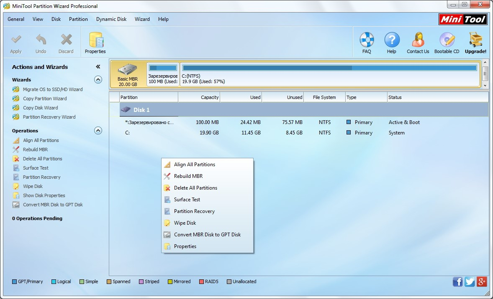

Paso 1: Preparación de la unidad USB
Descarga la versión adecuada de MiniTool Partition Wizard desde el sitio web oficial y sigue las instrucciones para crear una unidad USB de arranque con el software. Esto generalmente implica utilizar una herramienta de creación de medios USB, como Rufus, y seleccionar el archivo ISO de MiniTool Partition Wizard.
Paso 2: Configuración del ordenador

Conecta la unidad USB de arranque a tu ordenador. Accede a la configuración de arranque del sistema, generalmente presionando una tecla específica (como F2, F12 o Esc) durante el proceso de inicio. Asegúrate de que la configuración de arranque esté configurada para arrancar desde la unidad USB.
Paso 3: Inicia MiniTool Partition Wizard desde la USB

Reinicia el ordenador y se iniciará desde la unidad USB de arranque. Selecciona la opción para ejecutar MiniTool Partition Wizard desde el menú de arranque.
Paso 4: Selecciona el disco a formatear
En la interfaz de MiniTool Partition Wizard, identifica el disco que deseas formatear en la lista de discos disponibles. Haz clic derecho en el disco y selecciona "Format" (Formatear) en el menú desplegable.
Paso 5: Configura las opciones de formateo

En la ventana emergente de formateo, elige el sistema de archivos deseado, como NTFS o FAT32. Puedes asignar un nombre a la partición y seleccionar el tamaño del clúster. Asegúrate de marcar la opción "Quick Format" (Formateo rápido) si deseas un formateo más rápido.
Paso 6: Confirma el formateo

Antes de continuar, asegúrate de que has seleccionado el disco correcto y comprendes que el formateo borrará todos los datos en él. Haz clic en "OK" (Aceptar) para confirmar y comenzar el proceso de formateo.
Paso 7: Reinicia el sistema e instala Windows 10

Una vez que el formateo esté completo, retira la unidad USB de arranque y reinicia tu ordenador. Inserta la unidad USB o el DVD de instalación de Windows 10. Sigue las instrucciones en pantalla para iniciar la instalación de Windows 10. Durante el proceso de instalación, elige la partición recién formateada como ubicación para instalar el sistema operativo. Sigue las instrucciones adicionales proporcionadas por el asistente de instalación de Windows 10 para completar la instalación.